Jinkey原创
感谢 showonne、yubang 技术指导
Demo 地址:
http://demo.jinkey.io/vue2
源码:
https://github.com/Jinkeycode/vue2-example
什么是 Vue
Vue 是一个前端框架，特点是
数据绑定
比如你改变一个输入框 Input 标签的值，会自动同步更新到页面上其他绑定该输入框的组件的值
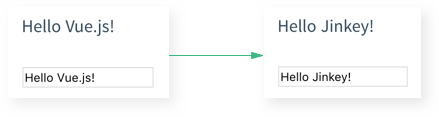

组件化
页面上小到一个按钮都可以是一个单独的文件.vue，这些小组件直接可以像乐高积木一样通过互相引用而组装起来
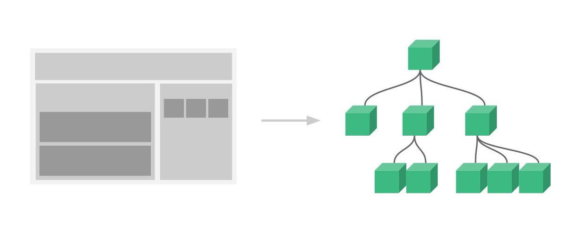
Vue2.0 推荐开发环境
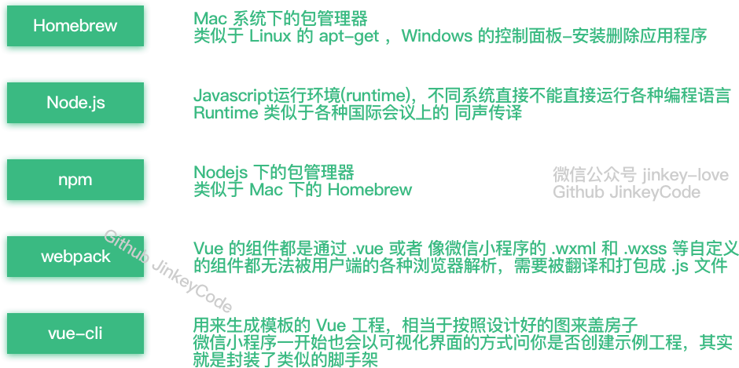
Homebrew 1.0.6(Mac)、Node.js 6.7.0、npm 3.10.3、webpack 1.13.2、vue-cli 2.4.0、Atom 1.10.2
环境安装
Mac OS系统安装 brew
打开终端运行以下命令:
/usr/bin/ruby -e "$(curl -fsSL https://raw.githubusercontent.com/Homebrew/install/master/install)"
Mac OS系统安装 nodejs
brew install nodejs
用 npm install npm@3.10.3 更新 npm 版本报错:
(node:42) fs: re-evaluating native module sources is not supported.
解决办法:
在官网下载6.70的安装包再安装一次(刚刚相当于帮你配置好环境变量，现在再安装一次升级到最新的 npm)
- 好像以前官网的安装包不会自动配置环境变量的，由于我电脑上之前安装过 nodejs 所以环境变量已经配置好了，不知道现在的安装包会不会自动配置环境变量。
Windows 下直接下载安装包即可
linux 下可以使用 apt-get（ubuntu） 或 yum（centos） 命令安装。
具体可参考：http://school.yunwei.edu/nodejs/nodejs-install-setup.html
获取nodejs模块安装目录访问权限
sudo chmod -R 777 /usr/local/lib/node_modules/
安装淘宝镜像
大家都知道国内直接使用 npm 的官方镜像是非常慢的，这里推荐使用淘宝 NPM 镜像。
npm install -g cnpm --registry=https://registry.npm.taobao.org
这样就可以使用 cnpm 命令来安装模块了：
cnpm install [name]
安装webpack
cnpm install webpack -g
安装vue脚手架
npm install vue -cli -g
在硬盘上找一个文件夹放工程用的，在终端中进入该目录
cd 目录路径
根据模板创建项目
vue init webpack-simple 工程名字<工程名字不能用中文>
或者创建 vue1.0 的项目
vue init webpack-simple#1.0 工程名字<工程名字不能用中文>
会有一些初始化的设置，如下输入:Target directory exists. Continue? (Y/n)直接回车默认(然后会下载 vue2.0模板，这里可能需要连代理)Project name (vue-test)直接回车默认Project description (A Vue.js project) 直接回车默认Author 写你自己的名字
cd 命令进入创建的工程目录
工程目录如图所示:

安装项目依赖
一定要从官方仓库安装，npm 服务器在国外所以这一步安装速度会很慢。
npm install
不要从国内镜像cnpm安装(会导致后面缺了很多依赖库)
cnpm install
安装 vue 路由模块vue-router和网络请求模块vue-resource
cnpm install vue-router vue-resource --save
启动项目
npm run dev
填坑(以下坑可能由于 vue2.0 导致其他相关编译打包工具没更新导致的)
【重点】后来发现这些坑是由于 npm 不是最新的版本3.10.2， 用 npm 3.9.5就会出现以下坑
解决办法: 请运行以下命令
npm update -g
报错
Error: Cannot find module 'opn' Error: Cannot find module 'webpack-dev-middleware' Error: Cannot find module 'express' Error: Cannot find module 'compression' Error: Cannot find module 'sockjs' Error: Cannot find module 'spdy' Error: Cannot find module 'http-proxy-middleware' Error: Cannot find module 'serve-index'
如果你用的是老版本的 vue-cli 还可能报其他错误，需要更新一下 vue-cli
npm update vue-cli
然后可以查看一下当前全局 vue-cli 的版本
npm view vue-cli
安装一下这个依赖到工程开发环境
cnpm install opn --save-dev cnpm install webpack-dev-middleware --save-dev cnpm install express --save-dev cnpm install compression --save-dev cnpm install sockjs --save-dev cnpm install spdy --save-dev cnpm install http-proxy-middleware --save-dev cnpm install serve-index --save-dev cnpm install connect-history-api-fallback --save-dev
再启动项目，报错
ERROR in ./src/main.js Module build failed: Error: Cannot find module 'babel-runtime/helpers/typeof' at Function.Module._resolveFilename (module.js:440:15) at Function.Module._load (module.js:388:25) at Module.require (module.js:468:17) at require (internal/module.js:20:19) at Object.<anonymous> (/Volumes/MacStorage/Coding/Web/vue-test/node_modules/.6.17.0@babel-core/lib/transformation/file/index.js:6:16) at Module._compile (module.js:541:32) at Object.Module._extensions..js (module.js:550:10) at Module.load (module.js:458:32) at tryModuleLoad (module.js:417:12) at Function.Module._load (module.js:409:3) @ multi main ERROR in ./~/.2.1.0-beta.8@webpack-dev-server/client/socket.js Module not found: Error: Can't resolve 'sockjs-client' in '/Volumes/MacStorage/Coding/Web/vue-test/node_modules/.2.1.0-beta.8@webpack-dev-server/client' @ ./~/.2.1.0-beta.8@webpack-dev-server/client/socket.js 1:13-37 @ ./~/.2.1.0-beta.8@webpack-dev-server/client?http://localhost:8080
安装一下 babel-runtime
cnpm install babel-helpers --save-dev
启动项目，再次报错
Module build failed: Error: Cannot find module 'babel-helpers' Module build failed: Error: Cannot find module 'babel-traverse' Module build failed: Error: Cannot find module 'json5' Module build failed: Error: Cannot find module 'babel-generator' Module build failed: Error: Cannot find module 'detect-indent' Module build failed: Error: Cannot find module 'jsesc'
找不到依赖那就再安装一下
cnpm install babel-helpers --save-dev cnpm install babel-traverse --save-dev cnpm install json5 --save-dev ...不写了，请把全部把旧的环境全部清除，更新到最新版本
解决办法概述
遇到
Module build failed: Error: Cannot find module '模块名'
那就安装
cnpm install 模块名 --save-dev(关于环境的，表现为npm run dev 启动不了) cnpm install 模块名 --save(关于项目的，比如main.js，表现为npm run dev 成功之后控制台报错) 比如escape-string-regexp、strip-ansi、has-ansi、is-finite、emojis-list
终于可以启动项目了
输入完命令会自动启动浏览器，如果默认打开 IE 不行
npm run dev
自动启动浏览器就会看到这个界面了。
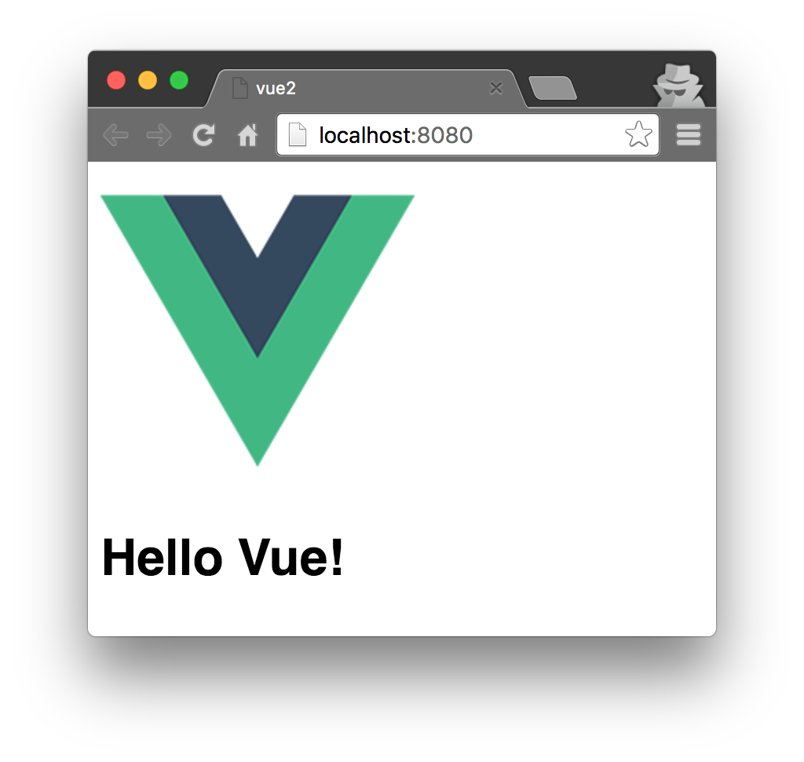
开始 Vue 之旅
打开 IDE
推荐 Atom 打开项目，需要安装 Vue 语法高亮的插件
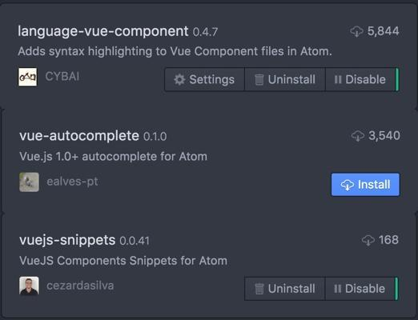使用官网文档学习基础
我们来看官网的一个例子，(中文文档请自行上网搜索)
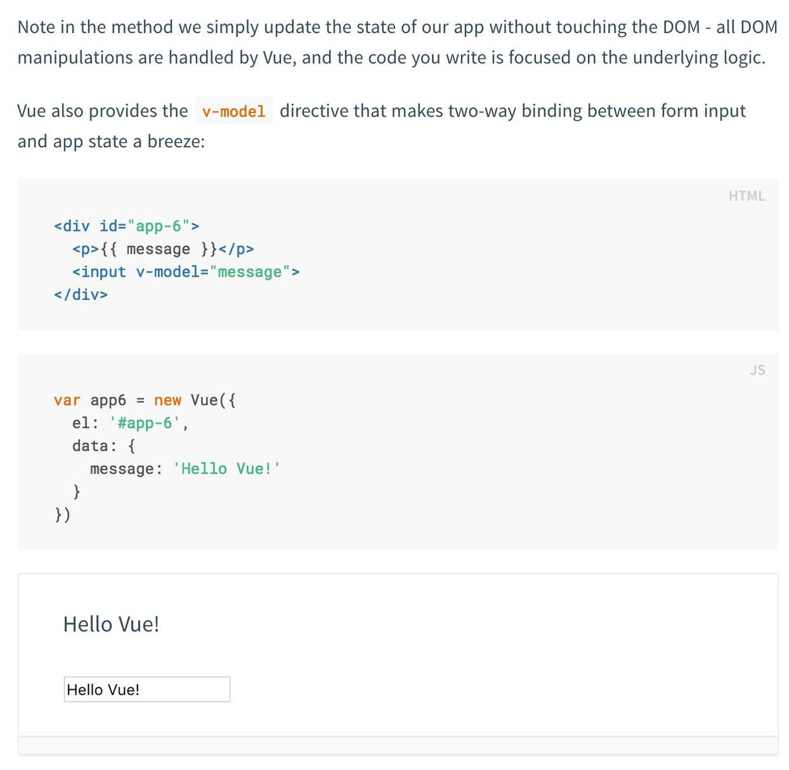
打开 工程目录下的 App.vue
template 写 html，script写 js，style写样式
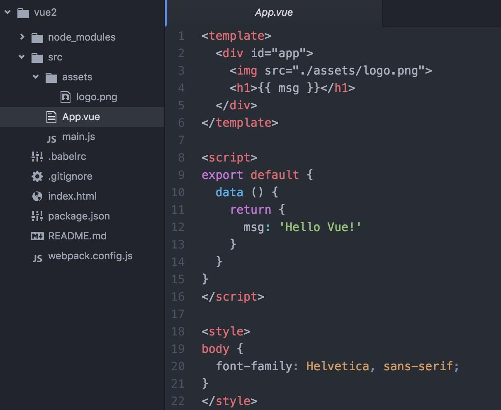
为了方便叙述，我们把官网例子写在同一个组件内
这里有两个坑:
第一。一个组件下只能有一个并列的 div，可以这么写，所以复制官网示例的时候只要复制 div 里面的内容就好。
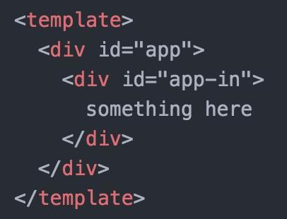
但是不能这样写:
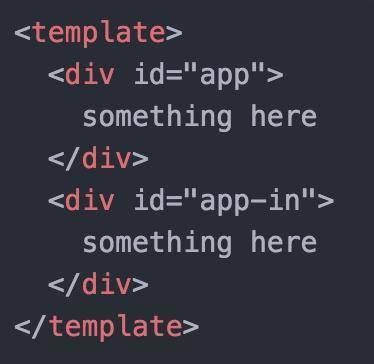
第二。数据要写在 return 里面而不是像文档那样子写
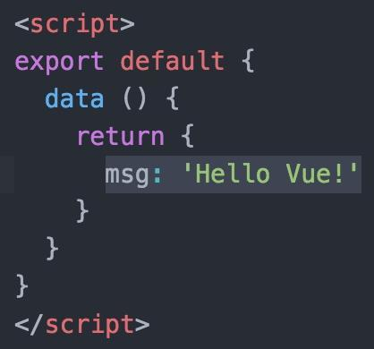
错误的写法:
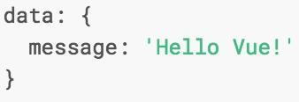
这样子可以自己啃完官网文档组件之前的部分了。
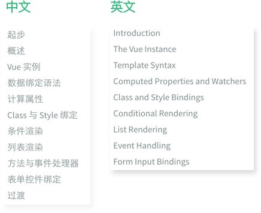
来玩玩组件
前面讲得基本上都是各种常用组件的数据绑定，下面还得说说的是 Vue 的组件的使用。
在工程目录/src下创建component文件夹，并在component文件夹下创建一个 firstcomponent.vue并写仿照 App.vue 的格式和前面学到的知识写一个组件。
duang... 不能按官网文档那样子叫我做就做，我得先试试再告诉你，我做完效果是这样子的，希望观众做完也是这样子。(迷之微笑 )
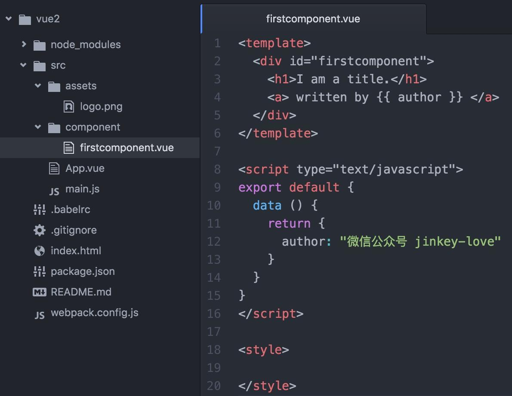
然后在 App.vue 使用组件 ( 因为在 index.html 里面定义了<div id="app"></div>所以就以这个组件作为主入口，方便 )
第一步，引入。在<script></script>标签内的第一行写
import firstcomponent from './component/firstcomponent.vue'
第二步，注册。在<script></script>标签内的 data 代码块后面加上 components: { firstcomponent }。记得中间加英文逗号!!!
export default {
data () {
return {
msg: 'Hello Vue!'
}
},
components: { firstcomponent }
}
第三步，使用。
在<template></template>内加上<firstcomponent></firstcomponent>
完成后的代码：
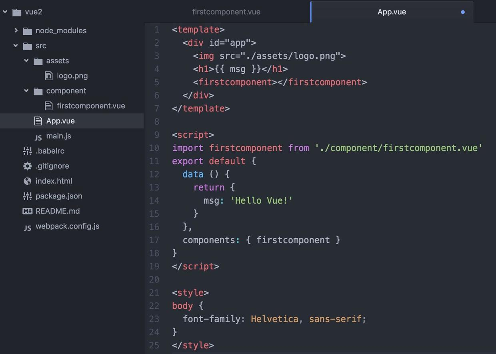
这时候看看浏览器上的 http://localhost:8080/ 页面(之前打开过就会自动刷新)，如果你没看到效果是因为你没有对 App.vue 和 firstcomponent.vue 进行保存操作，保存后页面会自动刷新。
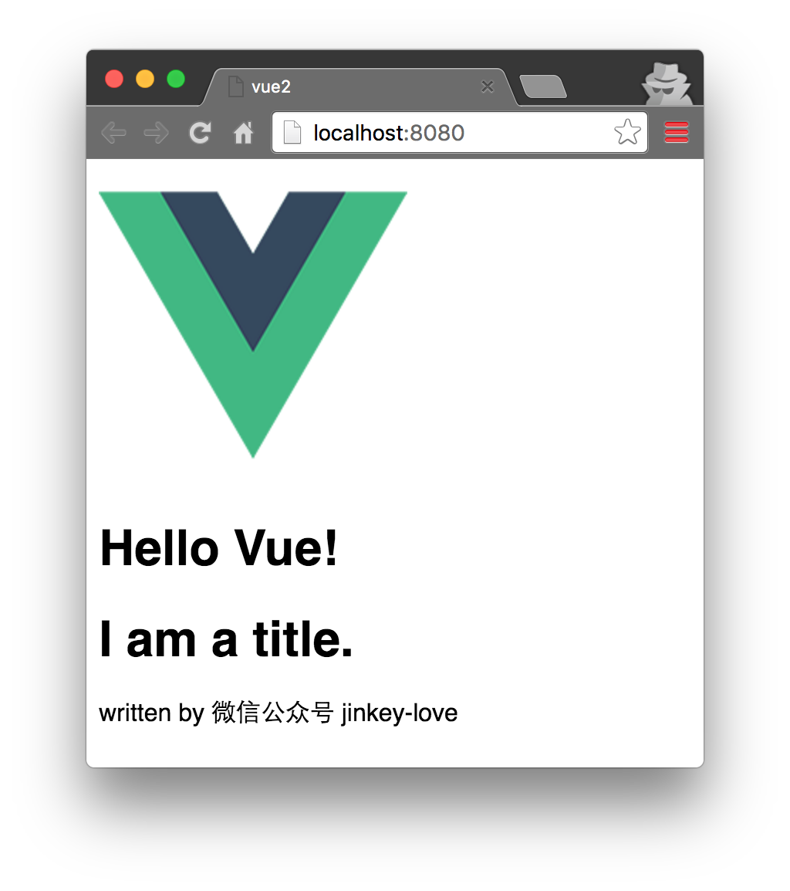
使用路由搭建单页应用
之前已经通过命令安装了vue-router
cnpm install vue-router --save
在webpack.config.js加入别名
resolve: {
alias: {vue: 'vue/dist/vue.js'}
}
为什么要加 alias 配置项？其作用可以在文档中有相应的描述:
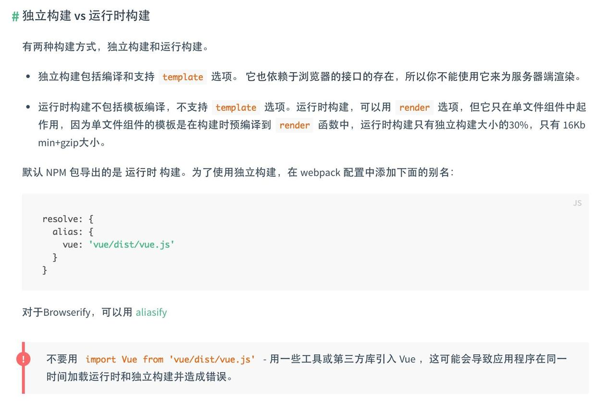
修改完之后的webpack.config.js是这样子的:
再按之前的方法写一个组件 secondcomponent.vue
这时候修改 main.js，引入并注册 vue-router
import VueRouter from "vue-router"; Vue.use(VueRouter);
并且配置路由规则和 app 启动配置项加上 router，旧版的 router.map 方法在 vue-router 2.0 已经不能用了。修改后的main.js如下:
这样子改完再打开浏览器看看。
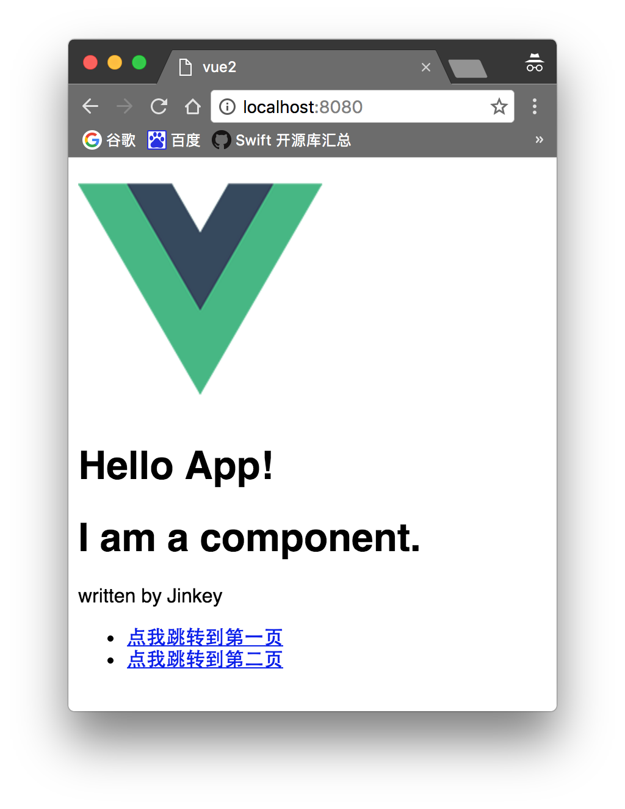
点击那两个链接试试，会发现<router-view class="view"></router-view>的内容已经展示出来，同时注意浏览器地址已经变更。
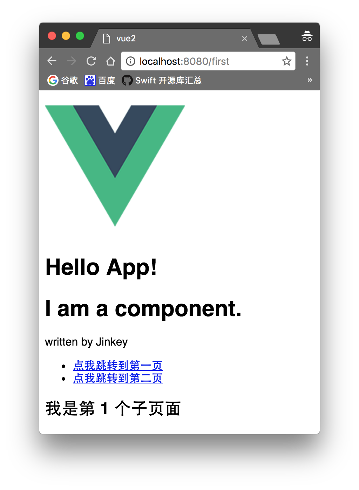
另外，也可以把 App.vue 的内容写在 main.js 也是可以的不过不建议这么做
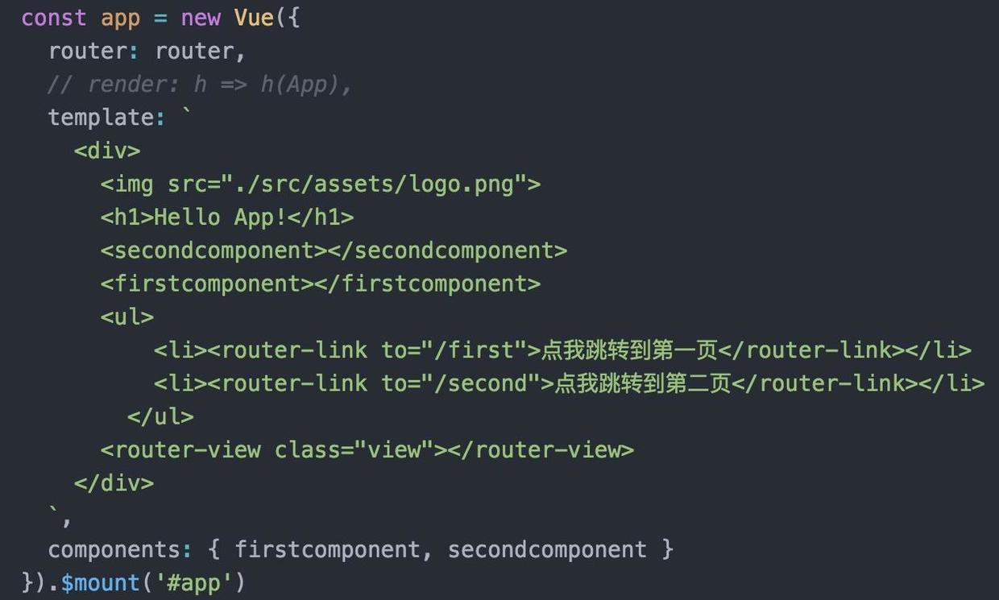
如果你使用 vue1.0和0.7版本的 vue-router，请参照下面这个教程, 他整个系列都不错的，当然仅限于 vue1.0 :
http://guowenfh.github.io/2016/03/28/vue-webpack-06-router/
给页面加点动态数据
这时候的页面都是静态的(数据在写程序的时候已经固定了不能修改)，而每个应用基本上都会请求外部数据以动态改变页面内容。对应有一个库叫 vue-resource 帮我们解决这个问题。
使用命令行安装
cnpm install vue-resource --save
在 main.js 引入并注册 vue-resource:
import VueResource from 'vue-resource' Vue.use(VueResource);
我们在 secondcomponent.vue 上来动态加载数据
添加一个列表:
<ul>
<li v-for="article in articles">
{{article.title}}
</li>
</ul>
在 data 里面加入数组 articles 并赋值为[]
然后在 data 后面加入加入钩子函数 mounted(详细请参照官方文档关于 vue 生命周期的解析)，data 和 mount 中间记得记得加逗号
这里使用的是豆瓣的公开 GET 接口，如果接口是跨域的 POST 请求，则需要在服务器端配置:
Access-Control-Allow-Origin: *
这时候运行看看。等一会接口返回数据，咦，数据加载出来了，棒棒哒 !
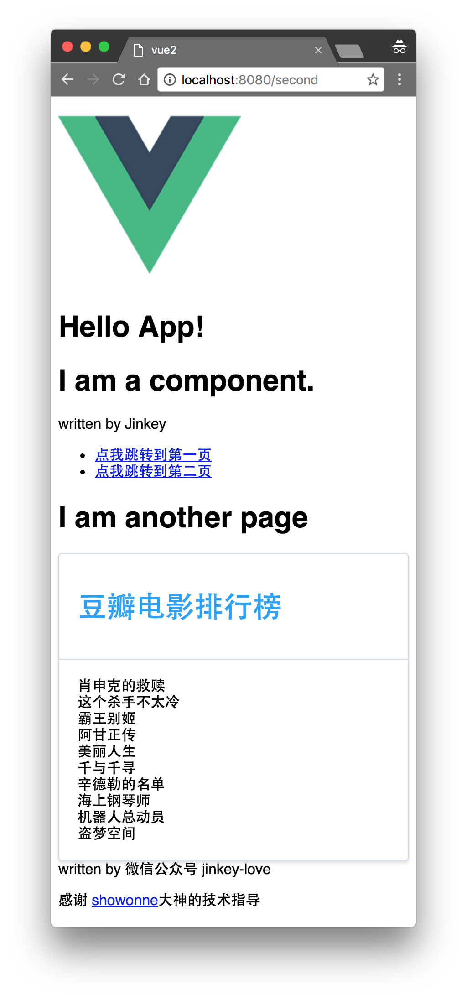
更多 vue-router 的使用方法可以看
vue-router 2.0
http://router.vuejs.org/zh-cn/index.html
来拯救如此难看的界面
组件、双向绑定、路由、数据请求等基本特性都能用了，写到这里一个单页应用基本上成型了。但是，这界面也太 TM 难看了吧。自己写 UI 框架太费劲？那就上网找一个吧。
本来想给大家介绍 Vux 的，因为他用的是微信的 WeUI 设计规范，对于开发微信小程序或者微信内的网页非常和谐，但由于写这篇文章的时候 Vux 还不支持 vue2.0，只能用别的框架了。
命令行安装 ElementUI (此处某公司的人应该发红包了...)
cnpm install element-ui@next -S
然后在 main.js 引入并注册
import Element from 'element-ui' import 'element-ui/lib/theme-default/index.css' Vue.use(Element)
保存，这时候程序报错
Uncaught Error: Module parse failed: /Users/**/Desktop/vue2/node_modules/.1.0.0-rc.5@element-ui/lib/theme-default/index.css Unexpected character '@' (1:0) You may need an appropriate loader to handle this file type.
官网文档又有坑了，安装教程也不跟我们说这一步，当我们都是高手了...
报错是由于我们引入了index.css这个 CSS 文件，但是 webpack 打包的时候无法识别并转换成 js，所以就需要配置才能读取 css 和字体文件，运行命令安装下面三个东西(如果之前安装过就不需要了)
cnpm install style-loader --save-dev cnpm install css-loader --save-dev cnpm install file-loader --save-dev
在 webpack.config.js 中的 loaders 数组加入以下配置，记得该加逗号的地方加逗号!
修改完的 webpack.config.js 如下
给豆瓣的电影列表套个衣服(样式) :
打开浏览器,输入网址:http://localhost:8080/second
列表比之前漂亮多了，你还可以参照 ElementUI 的文档使用更多组件样式
h3>编译
npm run build
又报错了...orz
ERROR in build.js from UglifyJs
SyntaxError: Unexpected token punc «(», expected punc «:» [build.js:32001,6]
把node_modules/.bin/cross-env里的
require('../dist')(process.argv.slice(2));
后来发现直接运行 webpack 命令就可以打包了
webpack --color --progress
接着把 index.html 和整个 dist 目录丢到服务器就可以了。


点我分享笔记
笔记需要是本篇文章的内容扩展！